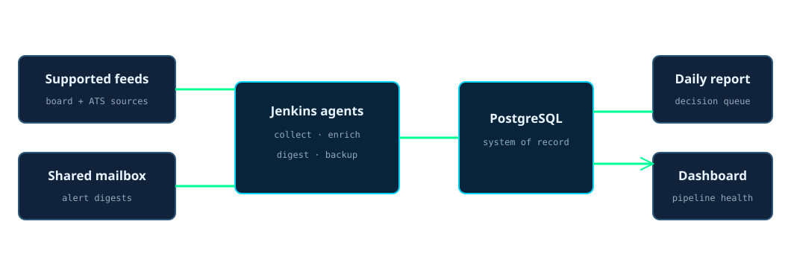
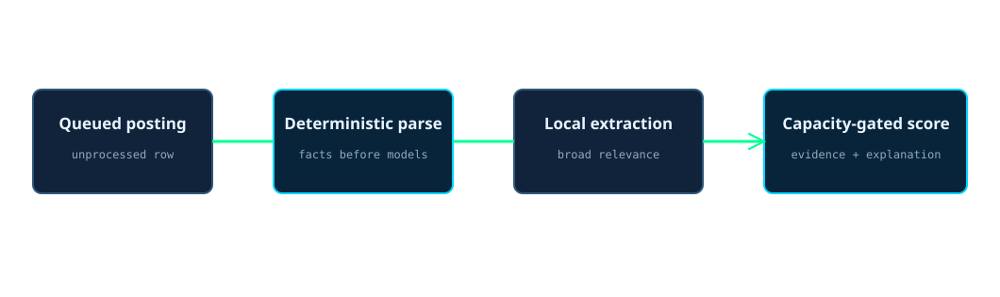

The job reporting pipeline
The job reporting pipeline turns scattered job-board and mailbox alerts into one reviewable daily queue.
4 scheduled Jenkins jobs divide collection, enrichment, reporting, and recovery. Collectors normalize supported feeds and shared-mailbox alerts into PostgreSQL. Deterministic parsers and bounded AI stages add structured fields, relevance, and evidence-backed fit scores. A daily digest brings new high-fit and time-sensitive records forward, while a separate backup job protects the database.
Measured from the last merged filing run at publish: 60 postings filed in the last run.
How to read it in thirty seconds
Where the pipeline runs
Jenkins schedules the 4 jobs. Their short-lived Kubernetes agents run repository scripts and retrieve narrow database, mailbox, and service access from Vault. PostgreSQL holds the normalized state. The optional local model performs broad extraction when available, while the headless subscription router admits harder scoring only when monitored capacity has room.

The seven-step reporting run
- The collector polls supported feeds.
Source-specific adapters retrieve postings while preserving their source identifiers and canonical URLs.
- The collector reads the shared mailboxes.
Email alerts are parsed, linked to the original posting where possible, and moved to a processed folder only after handling.
- Normalization writes one posting record.
URL and source identifiers suppress duplicates. Every collection run records its own outcome so zero new records is distinguishable from no completed run.
- Deterministic parsing runs first.
Scripts extract salary, location, remote status, deadlines, and skills before any model receives the posting.
- Enrichment advances bounded batches.
The local model handles broad extraction and relevance. Harder scoring is admitted by the API to usage-based AI pipelines system, which monitors subscription capacity and leaves an item queued when the admitted path is unavailable.
- The digest selects decisions.
The daily report brings new high-fit matches, approaching deadlines, and records needing more information into one operator view.
- Backup protects the system of record.
The database backup job runs separately so recovery evidence does not depend on a successful collection or enrichment run.
4 jobs, 4 failure boundaries
| Job | What it reads | What it changes |
|---|---|---|
| Collect | Supported feeds and shared mailboxes | Normalized postings, source state, liveness, and collection-run evidence |
| Enrich | Unprocessed PostgreSQL rows and the scoring rubric | Structured fields, relevance, fit score, and explanation |
| Digest | New, high-fit, expiring, and incomplete records | One private daily decision report |
| Database backup | The PostgreSQL system of record | A recovery artifact and backup-run evidence |
The queue keeps model work bounded

How it runs now
| When | What runs | What a quiet result means |
|---|---|---|
| Daily collection window | The collector polls feeds, ingests mailbox alerts, reconciles liveness, and records the run. | No new posting is a valid result when the run itself completed. |
| Daily enrichment window | Bounded batches receive deterministic fields, local extraction, and admitted scoring. | Already-processed rows remain unchanged; unavailable model capacity leaves work queued. |
| Daily report window | The digest selects high-fit, expiring, and incomplete records and sends the private report. | An empty section means no records met that section's rule, not that collection disappeared. |
| Daily backup window | The backup job writes the PostgreSQL recovery artifact. | Recovery evidence is current independently of collection and scoring. |
| Continuously | Prometheus and the dashboard observe Jenkins results, durations, and run counts. | The public view can prove pipeline operation without exposing posting or application data. |
What broke
Code and schema moved at different speeds on 2026-07-09
A fresh-database run reached code that expected the postings relation before the live schema had been migrated. The pipeline was healthy enough to start and still unable to complete the work it had checked out.
The correction
Migration now runs before any stage that trusts a changed schema. Source control describes the intended state, PostgreSQL reports the applied state, and Jenkins makes them converge before enrichment or reporting continues.
The other lesson
A single giant collection-and-model job would have hidden whether the source, database, model, or report failed. The 4-job split keeps those failures attributable and recoverable.
What I would do differently
I would establish the run ledger and schema migration contract before adding the first enrichment model. The valuable part is not producing a score. It is being able to explain which source produced the record, which run changed it, which evidence produced the score, and why a quiet report is trustworthy.